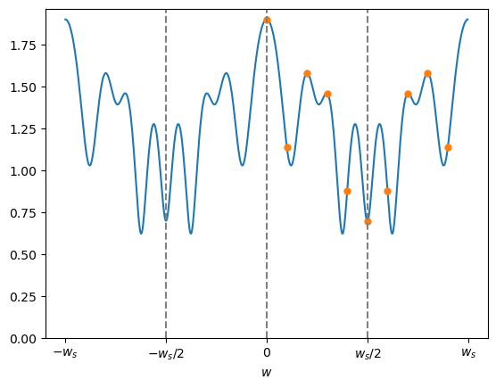
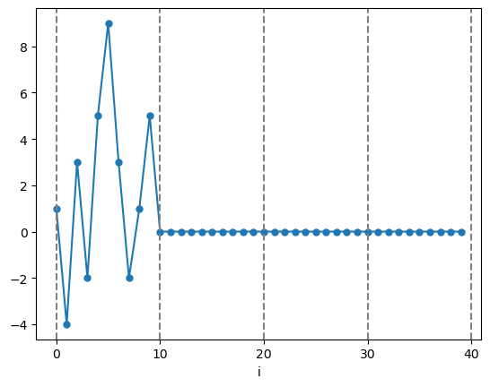
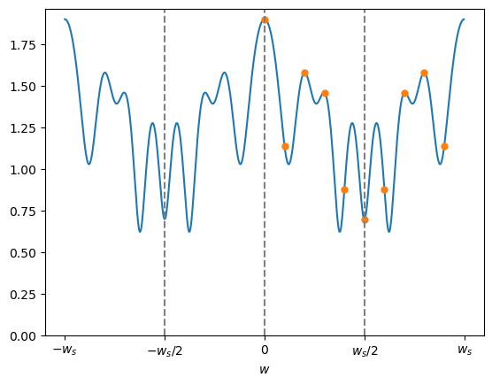
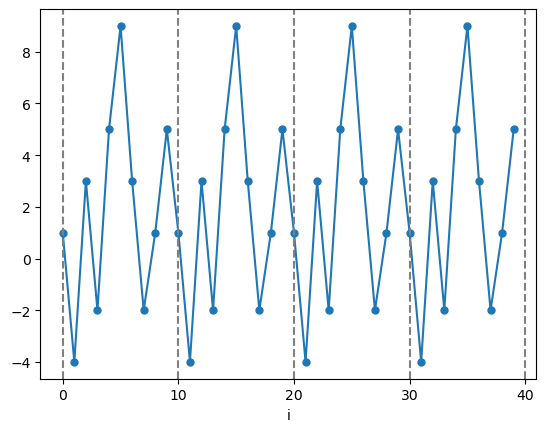

※ オレンジの点はサンプリング点 ( = DFT 係数)
絶対値 $|\textrm{F}(w)|/\textrm{N}$
偏角 $\angle \textrm{F}(w)/\textrm{N}$

$f[i]$ が周期 N の周期的なディジタル信号のときは $f[i]$ をそのまま DTFT すれば DFT になりそうな気がしますが、$f[i]$ は収束しない(振動する)のでそのまま DTFT を求めても発散します。
という訳で、DTFT と DFT の関係を考えるためには少し工夫が必要です。
結論から言うと次のことが言えます。
$f[i]$ を周期 N の周期的なディジタル信号とする。
$f[i]$ の先頭から N 個分だけ値を取り出して作った長さ N のディジタル信号
に対する DTFT を $\textrm{F}(w)$ としたとき、 $\textrm{F}(w)/\textrm{N}$ を $w_s/\text{N}$ (rad/秒) おきにサンプリング(離散化)した値が DFT 係数 になる。
すなわち
まず $\textrm{F}(w)$ は周期 $w_s$ [rad/秒]の複素関数でしたので、$k$ を 0 から $\textrm{N}-1$ までの整数として
\[ w_k = \frac{w_s}{\text{N}} \cdot k \]
とサンプリング点 $w_k$ [rad/秒] を定義します。
ここで $w_s/\textrm{N}$ はサンプリング間隔を意味します。
次にこのサンプリング点上で $\textrm{F}(w)$ をサンプリングした信号を $\textrm{F}'(w)$ とすると、
\[ \textrm{F}'(w) = \frac{w_s}{\textrm{N}} \cdot \sum_{k=0}^{\textrm{N}-1} \ \textrm{F}(w) \cdot \delta(w - w_k ) \]
となります。
ここで $\delta(t)$ はディラックのデルタ関数 です。
また(やや恣意的な気もしますが)ゲインを調整するためサンプリング間隔 $w_s/\textrm{N}$ をかけています。
※ 何故いきなりデルタ関数が出てくるのか不思議な人はこちらやこちらの話を参照してください。
次にこの $\textrm{F}'(w)$ に対して IDTFT を計算して $f'[i]$ を求めます。
すると
となりますが、ここで
\begin{align*} \textrm{F}(w_k) & = \sum_{i=0}^{\text{N}-1} \left \{ f[i] \cdot \textrm{e}^{\{-j \cdot i \cdot w_k \cdot \tau \}} \right \} \\[10pt] & = \sum_{i=0}^{\text{N}-1} \left \{ f[i] \cdot \textrm{e}^{\{-j \cdot i \cdot (w_s / \text{N} \cdot k) \cdot (2\pi / w_s) \}} \right \} \\[10pt] & = \sum_{i=0}^{\text{N}-1} \left \{ f[i] \cdot \textrm{e}^{\{-j \cdot k \cdot \frac{2\pi}{\textrm{N}} \cdot i \}} \right \} \\[10pt] & = \textrm{N} \cdot \textrm{C}[k] \end{align*}
という関係が出てきました。
この関係を上の式に代入すれば
となるので、$\textrm{F}'(w)$ を IDTFT して求めた $f'[i]$ は周期的な信号であり、かつ DFT 係数 $\text{C}[k]$ を IDFT して求めた f[i] と一致していることが分かります。
では例を示します。
$f[i]$ を周期 $\textrm{N} = 10$ の周期的なディジタル信号とし、先頭 N=10 個の値を
\[ \{\ 1,\ -4,\ 3,\ -2,\ 5,\ 9,\ 3,\ -2\ ,1\ ,5\ \} \]
とします。
またサンプリング周波数を $f_s = 100$ [Hz] 、つまりサンプリング角周波数を $w_s = 200\pi$ [rad/秒] とします。
この時、 $f[i]$ の先頭 N = 10個からなる信号 は図1となります。

図1の信号の DTFT を $\textrm{F}(w)$ としたとき、 $\textrm{F}(w)/\textrm{N}$ の絶対値と偏角のグラフは以下の図2となります。
なお図中のオレンジの点はサンプリング点、つまり DFT 係数 $\text{C}[k]$ です。
※ オレンジの点はサンプリング点 ( = DFT 係数)
絶対値 $|\textrm{F}(w)|/\textrm{N}$
偏角 $\angle \textrm{F}(w)/\textrm{N}$
図2のオレンジの点を DFT 係数 $\text{C}[k]$ として IDFT して求めたグラフが次の図3です。
この様に図3は図1を周期的にしたグラフとなっていることが分かります。

参考までに、上のグラフを描画したプログラムはこちらです。